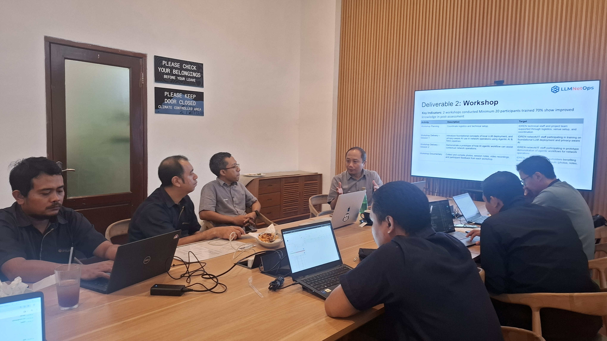
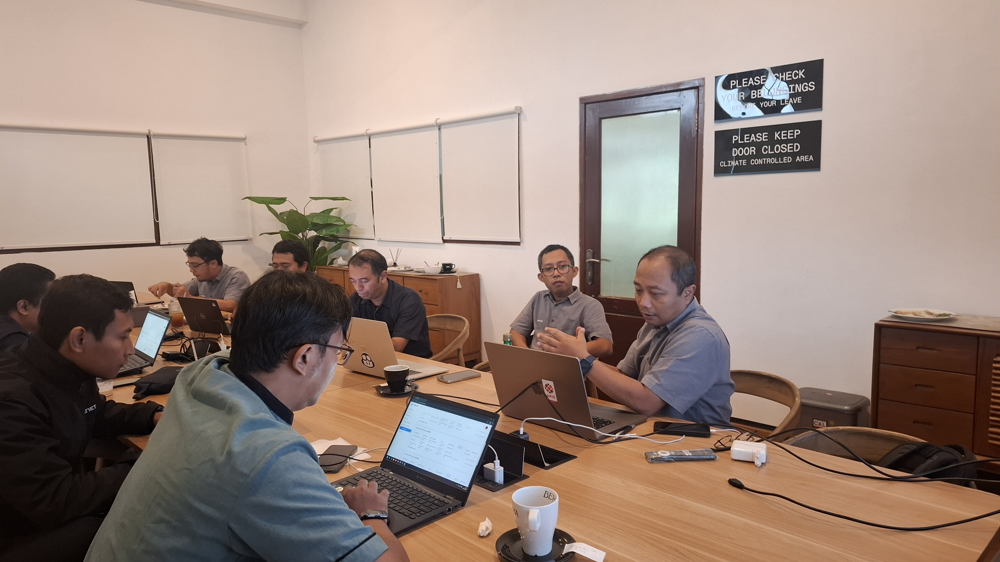

The official kickoff meeting for the LLMNetOps project was successfully held at Universitas Brawijaya on January 27, 2026. The meeting was led by Dr. Achmad Basuki, who guided the team through the project's objectives and strategic direction.
The meeting brought together the project team to officially launch this 15-month initiative focused on privacy-first AI integration for network operations. The project, funded by the APNIC Foundation through ISIF Asia 2025, aims to strengthen network operations knowledge through locally-hosted generative AI across IDREN member institutions.
Learn more about the project on the APNIC Foundation website.
Key Discussion Topics
During the meeting, the team discussed:
- Project overview and objectives
- Key deliverables: Curriculum Development, Workshop Implementation, Survey & Analysis, and Reporting
- Project timeline and milestones
- Team roles and responsibilities
- Workshop planning for IDREN participants
Looking Ahead
The project will conduct two hands-on workshop sessions for network operations professionals from IDREN member institutions, with a focus on privacy-aware LLM usage and practical skills development.
For more information, visit: https://llmnetops.github.io

